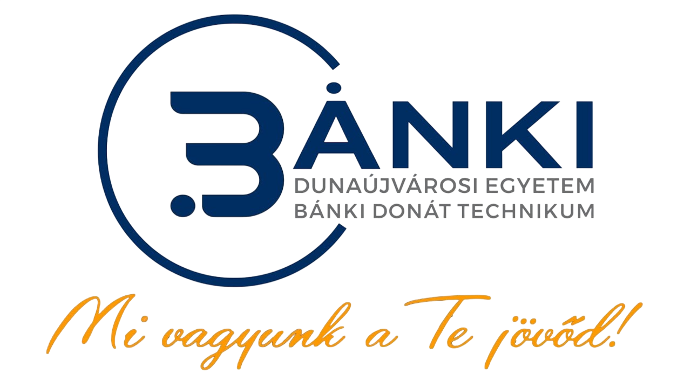

×

Kép 1 / 3

Kattints a galériáhozA Dunaújvárosi Egyetem Bánki Donát Technikum képzései a legmodernebb szakmai tudást biztosítják hallgatóik számára.
"Mi vagyunk a Te jövőd!"
Ez a felület azért jött létre, hogy az oktatási anyagok és tantárgyi követelmények könnyen elérhetőek legyenek mindenki számára. Kattints a tantárgyakra a PDF fájlok megtekintéséhez.
Kép 1 / 3